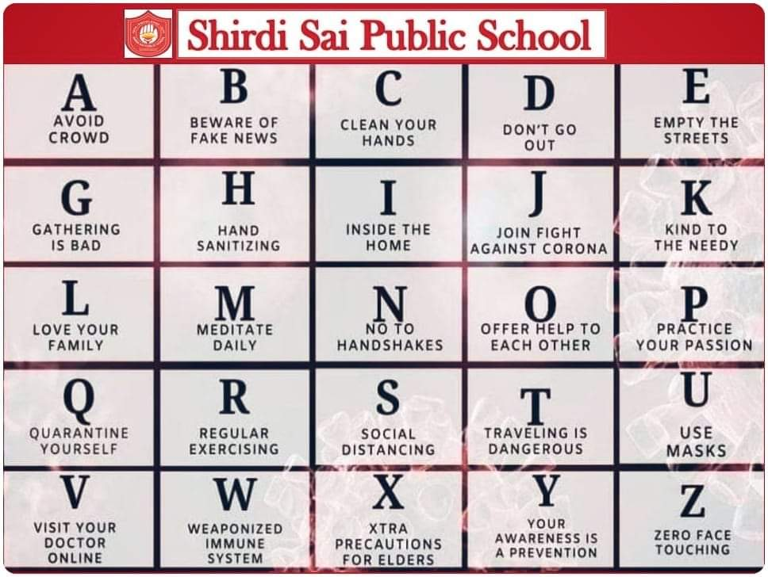

WING 1 WING 2
Affiliation No: 2131040 Affiliation No: 2133157
School Code: 81246 School Code: 81957
ESTD : 2003 ESTD : 2014
 Shirdi Sai Public School, with the help of innovation in education programs, focus on individual student we prepare our students to :
SSPS
We care.
Our Core Values
Our values set our students apart.
* Discipline is part of child’s personality
* Learning of Survival Skills
* Planning & Time Management
* Development of Self – confidence
* Development of Leadership Skills
* Social effectiveness, Cooperation & Team Work
Academic
Higher Standards of Education.
* Ideal Student: Teacher Ratio
*Latest Curriculum
*Passionate & Trained Teachers
*Optimum use of Technology
*Experiential learning / Learning beyond classroom
*International exposure

MR. ARUN KUMAR MR. RAJEEV JOSHIMS. NALINI ARORAMR. ARUN SAWHNEY
SPECIAL DG; UP POLICE IAS (CVO) FOUNDER MEMBERRetd. CEO, RANBAXY LABORATORIES
Address
Sai nagar, Near Railway Crossing Aghwanpur,
Moradabad-244001
Call us At:
Wing1:9412243611
Wing2:9720101694
Sarthak Agarwal
8B